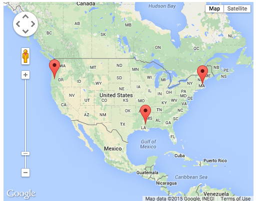
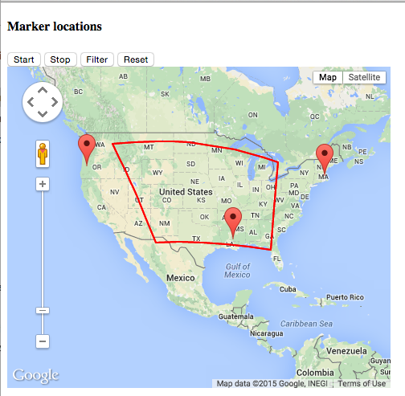
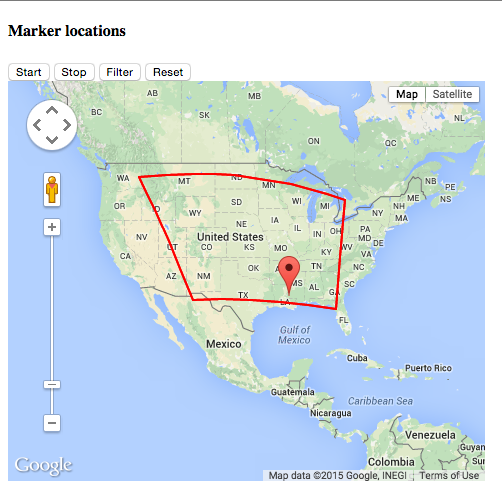
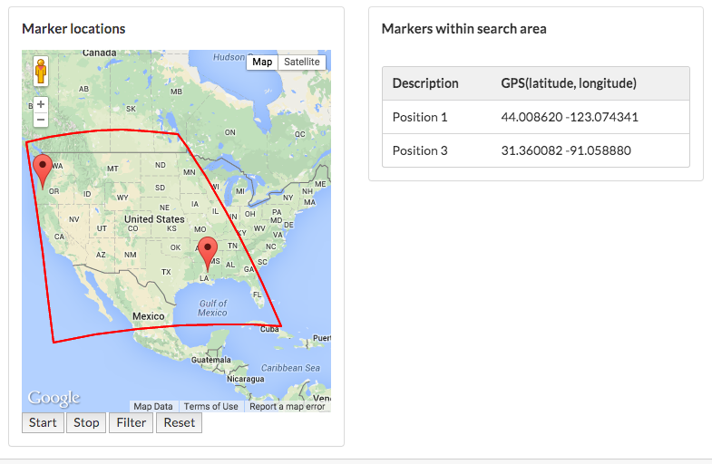

Manually create a polygon-shaped overlay on a Google map and filter out marker overlays located outside polygon. Employ a jQuery ajax call to fetch users and their geolocations from the server.
Create a Play app named play_google_map_polygon:
Still in project folder:
Create a file polygon.js in public/javascripts.
Add this content:
let map; // the google map
const latlng = []; // geolocation data later retrieved from server in func callback
const markers = []; // array of all markers (unfiltered)
/**
* Render the basic google map
*/
function initialize() {
rendermap();
retrieveMarkerLocations();
}
/**
* The basic map, no markers, no centre specified
* Canvas id on html is 'googleMap'
*/
function rendermap() {
const mapProp = {
mapTypeId:google.maps.MapTypeId.ROADMAP
};
//map = new google.maps.Map(document.getElementById("googleMap"), mapProp); // using vanilla js
map = new google.maps.Map($("#googleMap")[0], mapProp); // using jQuery
}
/**
* Use ajax call to get users and their geolocations
* pass returned array marker locations to callback method
* Here is the format in which marker data stored
* geoObj[0] is descripion.
* geoObj[1] is latitude
* geoObj[2] is longitude
* We use geoObj[0] in the infoWindow. Click marker to reveal description.
*/
function retrieveMarkerLocations()
{
$(function() {
$.get("/application/geolocations", function(data) {
$.each(data, function(index, geoObj) {
console.log(geoObj[0] + " " + geoObj[1] + " " + geoObj[2]);
});
callback(data);
});
});
}
/**
* we've got the marker location from data in ajax call
* we now put data into an array
* the format is 'firstName, xx.xxxx, yy.yyyyy' -> (firstName, lat, lng)
* then invoke 'fitBounds' to render the markers, centre map and create infoWindow to display firstName
*/
function callback(data)
{
latlng = data; // store the array of data in a global for later use
fitBounds(latlng); // then invoke fitBounds to zoom and display markers within view
setInfoWindowListener(latlng);
}
/**
* creates and positions markers
* sets zoom so that all markers visible
*/
function fitBounds(latlngStr)
{
const bounds = new google.maps.LatLngBounds();
for (let i = 0; i < latlngStr.length; i++)
{
marker = new google.maps.Marker({
position: getLatLng(latlngStr[i]),
map: map
});
markers[i] = marker;
bounds.extend(marker.position);
}
map.fitBounds(bounds);
}
function setInfoWindowListener(latlngStr)
{
const infowindow = new google.maps.InfoWindow();
for (let i = 0; i < latlng.length; i++)
{
/*respond to click on marker by displaying infowindow text*/
const marker = markers[i];
google.maps.event.addListener(marker, 'click', (function (marker, i) {
return function () {
infowindow.setContent(latlngStr[i][0]);
infowindow.open(map, marker);
}
})(marker, i));
}
}
/**
* A helper function to convert the latlng string to individual numbers
* and thence to a google.maps.LatLng object
* @param str str is list of strings : username, lat, lon
* str[0] is description
* str[1] is latitude
* str[2] is longitude
*
* @param The object 'str' holding an individual marker data set
* @return A google.maps.LatLng object containing the marker coordinates.
*/
function getLatLng(str)
{
const lat = Number(str[1]);
const lon = Number(str[2]);
return new google.maps.LatLng(lat, lon);
}
google.maps.event.addDomListener(window, 'load', initialize);Replace the Application controller code with the following:
package controllers;
import java.util.ArrayList;
import java.util.Arrays;
import java.util.List;
import play.mvc.Controller;
public class Application extends Controller {
public static void index() {
render();
}
/**
* Create list sample positional data
* Necessary to add json-simple-1.1.jar or equivalent to lib folder
* Then add jar to build path and import here
*/
public static void listGeolocations()
{
List<List<String>> jsonArray = new ArrayList<List<String>>();
jsonArray.add(0, Arrays.asList("Position 1", "44.008620", "-123.074341"));
jsonArray.add(1, Arrays.asList("Position 2", "42.360082", "-71.058880"));
jsonArray.add(2, Arrays.asList("Position 3", "31.360082", "-91.058880"));
renderJSON(jsonArray);
}
}Add this to routes (immediately following GET /):
GET /application/geolocations Application.listGeolocationsReplace main.html with the following:
<!DOCTYPE html>
<html>
<head>
<title>#{get 'title' /}</title>
<meta charset="${_response_encoding}">
<link rel="stylesheet" media="screen" href="@{'/public/stylesheets/main.css'}">
#{get 'moreStyles' /}
<link rel="shortcut icon" type="image/png" href="@{'/public/images/favicon.png'}">
</head>
<body>
#{doLayout /}
<script src="@{'/public/javascripts/jquery-2.2.3.js'}" type="text/javascript" charset="${_response_encoding}"></script>
#{get 'moreScripts' /}
</body>
</html>Ensure that the default jquery file in javascripts is replaced with jquery-2.2.3.js.
Replace Application/index.html as follows:
#{extends 'main.html' /}
#{set title:'Home' /}
<style>
#googleMap {
width: 500px;
height:400px;
}
</style>
<div id="googleMap"></div>
<script src="http://maps.googleapis.com/maps/api/js"></script>
<script src="@{'public/javascripts/polygon.js'}"></script>In a terminal execute play run. In a browser, at http://localhost:9000/ you should see something similar to that shown in Figure 1.

This concludes iteration v0.
In this iteration we shall facilitate drawing of a polygon overlay on the map, adding buttons to enable start, stop, reset and filtering of markers falling outside the polygon.
Add these declarations at the top of polygon.js immediately following const markers....
const startAllowed; // boolean to enforce start() invocation once only between refreshes
const pos = []; // array of lat, lng representing the polyline start and endpoints created by clicking map
const posIndex = 0; // index constiable associate with pos[]Add the following at the end of the file but before the last statement google.maps.event....
/** ***************************** filtering markers ************************** */
/**
* registers click listener to capture lat,lng
* clicked point data stored in array (pos[])
*/
function start() {
if (startAllowed == false) {
alert("Reset to Start");
return;
}
$('#usertable').empty();
listenerHandler = google.maps.event.addListener(map, 'click', function(e) {
pos[posIndex] = e.latLng;
if (posIndex > 0) {
polyline(posIndex - 1, posIndex);
}
posIndex += 1;
});
}
/**
* Stop drawing the sequence of polylines
* Update listeners Invoke drawPolygon method
*/
function stop() {
polyline(pos.length - 1, 0); // close the polygon: last to first points
// it would be better to somehow convert existing polyline to polygon
// but for the moment this will do - overlaying polyline with polygon
drawPolygon();
google.maps.event.removeListener(listenerHandler);
listenerHandler = null;
startAllowed = false; // ensures start() invokable once only between
// refreshes
}
/**
* (re)initialize array of locations falling within poly overlay.
* Recall latlng[i][0] contains description and latlng[i][1] and latlng[i][2]
* the latitude & longitude respectively. In this method the markers falling
* within polyon are rendered and those outside are not displayed
*/
function filter() {
for (let i = 0; i < latlng.length; i += 1) {
const point = new google.maps.LatLng(latlng[i][1], latlng[i][2]);
if (google.maps.geometry.poly.containsLocation(point, polygon)) {
markers[i].setVisible(true);
// populateTableRow(latlng[i]);
} else {
markers[i].setVisible(false);
}
}
}
/**
* Clears table row data Restores table data with complete unfiltered user list
*/
function reset() {
location.reload();
}
/**
* create and render a polyline on map attaches beginning to end previous
* polyline if such exists
*
* @param prevIndex
* @param index
*/
function polyline(prevIndex, index) {
const coords = [
new google.maps.LatLng(pos[prevIndex].lat(), pos[prevIndex].lng()),
new google.maps.LatLng(pos[index].lat(), pos[index].lng())];
const line = new google.maps.Polyline({
path : coords,
geodesic : true,
strokeColor : '#FF0000',
strokeOpacity : 1.0,
strokeWeight : 2
});
line.setMap(map);
}
/**
* Use data (pos[]) to draw polygon
*/
function drawPolygon() {
const lineCoords = [];
// log the coordinates
// draw polygon defined by coordinates
for (let j = 0; j < pos.length; j += 1) {
console.log(pos[j].lat + " " + pos[j].lng);
lineCoords[j] = new google.maps.LatLng(pos[j].lat(), pos[j].lng());
}
// make last point same as first to close the polygon
lineCoords[pos.length] = new google.maps.LatLng(pos[0].lat(), pos[0].lng());
polygon = new google.maps.Polyline({
path : lineCoords,
geodesic : true,
strokeColor : '#FF0000',
strokeOpacity : 1.0,
strokeWeight : 2
});
polygon.setMap(map);
google.maps.event.clearListeners(map, 'click');
}Replace Application.index.html with the following code. This introduces buttons that facilate invocation of functions declared in polygon.js.
#{extends 'main.html' /}
#{set title:'Polygon overlay' /}
<section class="ui segment">
<h4>Marker locations</h4>
<button type="button" onclick="start()">Start</button>
<button type="button" onclick="stop()">Stop</button>
<button type="button" onclick="filter()">Filter</button>
<button type="button" onclick="reset()">Reset</button>
</section>
<section class="ui segment">
<div id="googleMap" style="width:90%;height:400px;"></div>
</section>
<script src="http://maps.googleapis.com/maps/api/js"></script>
<script src="@{'public/javascripts/polygon.js'}"></script>Test the app as follows:


This concludes iteration v1.
Here we introduce code to write the marker data to a table in the view.
Add this code at the end of polygon.js just before the final statement google.maps.event....
/*******************************populating table with marker data*************************/
/**
* Populates table with complete marker list + it's gps coords
*/
function populateTable()
{
$.each(latlng, function(i, val) {
populateTableRow(val);
});
}
/**
* renders table row comprising marker and its gps coordinates
* @param data the array comprising description + gps (lat, lng)
*/
function populateTableRow(data)
{
const description = "<td>" + data[0] + "</td>";
const gps = "<td>" + data[1] + " " + data[2] + "</td>";
$('#markertable').append("<tr>" + description + gps + "</tr>");
}Invoke populateTable in function callback. This now becomes:
function callback(data) {
latlng = data; // store the array of data in a global for later use
fitBounds(latlng); // then invoke fitBounds to zoom and display markers
setInfoWindowListener(latlng);
populateTable();
}Initialize the marker table in function start. This now becomes:
function start() {
if (startAllowed == false) {
alert("Reset to Start");
return;
}
$('#markertable').empty();
listenerHandler = google.maps.event.addListener(map, 'click', function(e) {
pos[posIndex] = e.latLng;
if (posIndex > 0) {
polyline(posIndex - 1, posIndex);
}
posIndex += 1;
});
}Populate each table row in function filter. Here is the refactored method:
function filter() {
for (let i = 0; i < latlng.length; i += 1) {
const point = new google.maps.LatLng(latlng[i][1], latlng[i][2]);
if (google.maps.geometry.poly.containsLocation(point, polygon)) {
markers[i].setVisible(true);
populateTableRow(latlng[i]);
} else {
markers[i].setVisible(false);
}
}
}We now redesign Application.index.html to dispay, in addition to the map, a table of currently rendered marker data:
#{extends 'main.html' /}
#{set title:'Polygon overlay' /}
<section class="ui segment">
<div class="ui grid">
<div class="eight wide column">
<section class="ui segment">
<h4>Marker locations</h4>
<div id="googleMap" style="width:100%;height:400px;"></div>
<button type="button" onclick="start()">Start</button>
<button type="button" onclick="stop()">Stop</button>
<button type="button" onclick="filter()">Filter</button>
<button type="button" onclick="reset()">Reset</button>
</section>
</div>
<div class="eight wide column">
<section class="ui segment">
<h4>Markers within search area</h4><br>
<div style="overflow-y:scroll; max-height:405px">
<table class="ui table segment">
<thead>
<tr>
<th>Description</th>
<th>GPS(latitude, longitude)</th>
</tr>
</thead>
<tbody id="markertable">
<tr>
</tr>
</tbody>
</table>
</div>
</section>
</div>
</div>
</section>
<script src="http://maps.googleapis.com/maps/api/js"></script>
<script src="@{'public/javascripts/polygon.js'}"></script>Test the app. Here is an example where one of the markers is filtered out. Note that the table represents the remaining markers only.

This concludes iteration v2 (and the lab).
A compressed folder containing the git repository of play_google_map_polygon is available for download here.
Modify the code so that when a marker is clicked, in addition to the existing text, the latitude and longitude of the marker are also displayed.